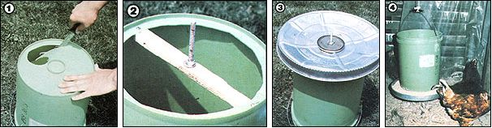
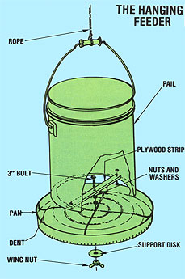

Most hens waste more mash than they eat, but you can put an end to their spendthrift ways:
Ray Meloy
I like raising poultry about as much as anybody does, but let's face it . . . chickens have absolutely rotten table manners. If given the opportunity to do so, they'll walk all over their feed, scatter the provender to and fro, and - worse yet - leave droppings on perfectly good (and danged expensive) mash.
Sure, there are commercial feeders on the market that are designed to discourage such misdeeds (the common trough models, for example, are often equipped with loose center rails that keep the birds from standing on or over their food), but even those devices have their shortcomings: They can be difficult to fill, hold only a small amount of mix, and have a way of disassembling themselves between feedings.
That's why I designed a hanging feeder that can be raised (as the birds grow) or lowered (for youngsters) . . . prevents spillage and spoilage . . . requires only infrequent refillings . . . and - best of all - can be cobbled together, in just a couple of hours, from little more than common household and workshop items.
CONSTRUCTION
The main component of my invention is a hopper made from a five-gallon plastic pail. If you don't already have a bucket that you can spare, you can probably get one at a fast-food restaurant. The quick-eats emporiums often buy margarine and other foodstuffs in such containers, and either give away the empties or sell them for a dollar or two.
You'll also need a shallow circular pan with a lip all the way around its circumference. I used the lid from a metal ten-gallon garbage can (I removed the handle first) . . . but any similar item that has a diameter 1-1/2" to 3" larger than that of the hopper, and is no more than 4 inches deep, will do. (If you're handy with sheet metal, you could even make a suitable tray yourself.)
Turn the plastic pail upside down and snip out its bottom . . . leaving a 1"-wide border all around. Now, cut a strip of 1/2" plywood about an inch wide and as long as the bucket's interior diameter. Place the piece inside the pail so that its ends rest on the 1" rim, and - after drilling a small hole at each end of the plywood and through the plastic - secure the strip in place with a couple of nuts and bolts.
Next, choosing a point in the middle of that wooden crossmember, drill a hole large enough to accommodate a 1/4" or 5/16" bolt . . . insert the (3"-long) threaded fastener so that it extends outward through the bottom . . . and fasten it in place with a washer and nut. Then slip on another nut and washer - in that order - about halfway up the bolt.
With that done, take the metal pan and - using a rubber mallet or, if you're careful not to pound too hard, a regular hammer - indent the bottom upward so that the pan's middle is nearly as high as its outer lip . . . forming a circular trough around the periphery (this will insure an even flow of feed from the hopper). Now, drill a hole in the center of the pan, and slip the trough onto the 3" bolt (top side facing the bucket, of course).
The feeder will have to support a fair amount of mash (a five-gallon pail holds about 25 pounds of grain) . . . so it's a good idea to install a large (4" or so) metal disk - rather than an ordinary washer - beneath the pan. You can use almost any round, flat scavenged object for this purpose (an old paint can lid, for example, works well). Whatever you choose, drill a hole in its center . . . insert the bolt . . . and fasten the assembly in place with a wing nut. Now, attach a length of rope or clothesline to the pail's handle . . . and - presto - you're done.
To regulate the flow of feed, simply adjust the nuts above and below the pan . . . the closer the trough is to the bottom of the pail, the slower the flow will be. In any case, though, be sure that the two nuts clamp the pan very tightly . . . otherwise, it'll list to one side and cause an uneven distribution of grain.
Just hang your feeder at an appropriate height (one rule of thumb is to keep the outer lip at the level of your birds' backs) . . . and let your chickens dine to their hearts' delight. They'll enjoy having a ready supply of mash available, and I think you'll like the way your hanging feeder prevents waste ... and improves your birds' mealtime politesse!
EDITOR'S NOTE: You'll find yet another nifty idea for making a feeder from a five-gallon plastic bucket on page 110 of MOTHER NO. 50. For information on ordering back issues, see page 180.
|
 (Photos by the Author) [1] Leave a 1"" border when you cut out the bottom of the pail. [2] Then attach the crosspiece and bolt . . . [3] fasten on the pan and support disk . . . [4] and hang your homemade feeder at the appropriate height |
 |
|